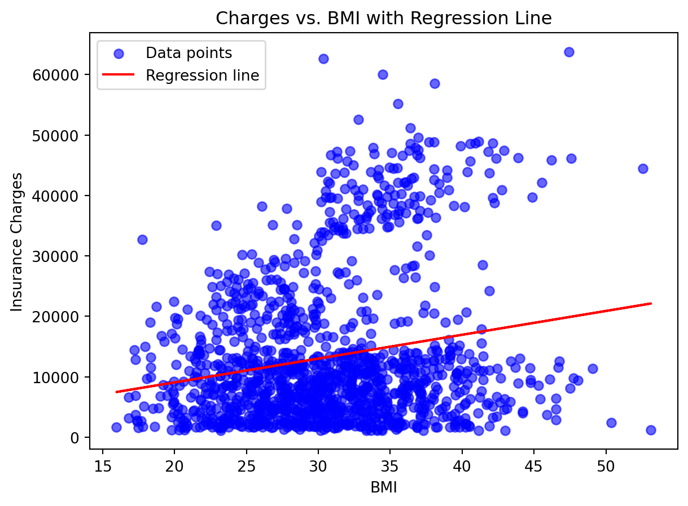

For this blog, and mainly to show my understanding of GitHub pages, I have chosen to make a tutorial on scatterplots within Python.
Introduction
Understanding relationships between variables is a core part of data science. One simple, yet powerful way to summarize a relationship is through linear regression. By overlaying a regression line on a scatterplot, we can both visualize trends and quantify the connection between variables.
The “Medical Cost Personal Dataset” from Kaggle contains demographic and health information, including BMI and insurance charges. These two variables are linked in practice: insurers charge higher premiums for higher health risk, and body mass index is often used as a proxy for that risk. In this tutorial, we will demonstrate a workflow that begins with raw data and produces an interpretable regression model.
You will learn how to: load and inspect the dataset, visualize BMI against insurance charges, fit a regression line, and interpret the results. By the end of this tutorial, you will have a reproducible approach that can be adapted to other regression tasks. and teaches you how regression works.
Data Loading & Inspection
We begin by importing the necessary Python libraries and loading the dataset. Pandas allows us to manage the data easily, NumPy provides a convenient way to fit a regression line, and Matplotlib enables clear visualizations.
Code
import pandas as pdimport numpy as npimport matplotlib.pyplot as plt# Load the datasetdf = pd.read_csv("insurance.csv")# Drop missing values if anydf = df.dropna()# Inspect the first few rowsdf.head()
age
sex
bmi
children
smoker
region
charges
0
19
female
27.900
0
yes
southwest
16884.92400
1
18
male
33.770
1
no
southeast
1725.55230
2
28
male
33.000
3
no
southeast
4449.46200
3
33
male
22.705
0
no
northwest
21984.47061
4
32
male
28.880
0
no
northwest
3866.85520
The dataset contains several columns, including age, sex, bmi, children, smoker, region, and charges. For this tutorial, we focus on bmi as the predictor and charges as the target variable. Exploring the first few rows helps us confirm the data types and detect any obvious issues before analysis. Scatterplot: BMI vs. Charges A scatterplot is a natural first step to explore the relationship between BMI and insurance charges. By plotting each data point, we can visually assess trends and potential outliers.
The resulting plot demonstrates a general upward trend: individuals with higher BMI tend to have higher insurance charges. While there is considerable variation, the pattern suggests that a simple linear model may provide a meaningful summary of this relationship. Fitting the Regression Line To quantify the trend, we fit a linear regression using NumPy’s polyfit function. This approach calculates the slope and intercept that best approximate the relationship between BMI and charges.
The resulting regression line can be expressed mathematically as: \[
\hat{y} = \beta_0 + \beta_1 x
\] Here, \(x\) represents BMI, \(\beta_0\) is the intercept, and \(\beta_1\) is the slope. The slope indicates the average change in charges per unit increase in BMI, while the intercept is the predicted charges at BMI = 0. Although the intercept has limited practical meaning in this context, it is necessary for the linear equation. Overlaying the Regression Line Visualizing the regression line alongside the data provides a clear representation of the average trend.
Code
x = df["bmi"]y_pred = slope * x + interceptplt.scatter(x, df["charges"], color="blue", alpha=0.6, label="Data points") plt.plot(x, y_pred, color="red", label="Regression line") plt.xlabel("BMI") plt.ylabel("Insurance Charges") plt.title("Charges vs. BMI with Regression Line") plt.legend() plt.show()

The red line illustrates how charges generally increase with BMI. Although individual points deviate from the line, the trend captures the central tendency of the data. Summary Table of Regression Parameters The regression line can be expressed as \(\hat{y} = \beta_0 + \beta_1 x\), where \(x\) is BMI, \(\beta_0\) is the intercept, and \(\beta_1\) is the slope.
To summarize the regression results: Parameter Estimate Interpretation Intercept β₀ Predicted charges at BMI = 0 (mathematical necessity) Slope β₁ Average increase in charges per unit of BMI This table provides a concise, quantitative summary of the model. Interpretation & Caveats While the regression line provides insight, several caveats should be noted. First, the variance around the line is substantial, indicating that BMI alone does not fully explain insurance charges. Second, the assumption of linearity may not hold perfectly, as other factors such as smoking status, age, and region also influence charges. Third, predictions outside the observed BMI range are unreliable and should be avoided. Despite these limitations, this approach is a powerful starting point for understanding the relationship between two variables and can easily be extended to multiple regression scenarios incorporating additional predictors. Conclusion & Call to Action In this tutorial, we loaded the Kaggle insurance dataset, visualized BMI against insurance charges, fitted a regression line, and interpreted the slope and intercept. This simple workflow—scatterplot, regression, and interpretation—is an essential tool in any data scientist’s toolkit.
Next steps: Download the dataset from Kaggle and reproduce the analysis yourself. Extend the analysis by including additional variables such as smoker or age in a multiple regression model. Publish your results on your GitHub Pages site, complete with code, tables, and figures, to showcase your work and reinforce your understanding of regression analysis.
Source Code
---title: "My Tutorial Blog"author: "Cooper Maughan"format: html---## PurposeFor this blog, and mainly to show my understanding of GitHub pages, I have chosen to make a tutorial on scatterplots within Python.# IntroductionUnderstanding relationships between variables is a core part of data science. One simple, yet powerful way to summarize a relationship is through linear regression. By overlaying a regression line on a scatterplot, we can both visualize trends and quantify the connection between variables.The "Medical Cost Personal Dataset" from [Kaggle](https://www.kaggle.com/datasets/mirichoi0218/insurance) contains demographic and health information, including BMI and insurance charges. These two variables are linked in practice: insurers charge higher premiums for higher health risk, and body mass index is often used as a proxy for that risk. In this tutorial, we will demonstrate a workflow that begins with raw data and produces an interpretable regression model.You will learn how to: load and inspect the dataset, visualize BMI against insurance charges, fit a regression line, and interpret the results. By the end of this tutorial, you will have a reproducible approach that can be adapted to other regression tasks. and teaches you how regression works.# Data Loading & InspectionWe begin by importing the necessary Python libraries and loading the dataset. Pandas allows us to manage the data easily, NumPy provides a convenient way to fit a regression line, and Matplotlib enables clear visualizations.```{python}import pandas as pdimport numpy as npimport matplotlib.pyplot as plt# Load the datasetdf = pd.read_csv("insurance.csv")# Drop missing values if anydf = df.dropna()# Inspect the first few rowsdf.head()```The dataset contains several columns, including age, sex, bmi, children, smoker, region, and charges. For this tutorial, we focus on bmi as the predictor and charges as the target variable. Exploring the first few rows helps us confirm the data types and detect any obvious issues before analysis. Scatterplot: BMI vs. Charges A scatterplot is a natural first step to explore the relationship between BMI and insurance charges. By plotting each data point, we can visually assess trends and potential outliers.```{python}plt.scatter(df["bmi"], df["charges"], color="blue", alpha=0.6, label="Data points") plt.xlabel("BMI") plt.ylabel("Insurance Charges")plt.title("Insurance Charges vs. BMI") plt.legend() plt.show()```The resulting plot demonstrates a general upward trend: individuals with higher BMI tend to have higher insurance charges. While there is considerable variation, the pattern suggests that a simple linear model may provide a meaningful summary of this relationship. Fitting the Regression Line To quantify the trend, we fit a linear regression using NumPy's polyfit function. This approach calculates the slope and intercept that best approximate the relationship between BMI and charges.```{python}slope, intercept = np.polyfit(df["bmi"], df["charges"], 1) print(f"Regression equation: charges = {intercept:.2f} + {slope:.2f}\* bmi") ```The resulting regression line can be expressed mathematically as: $$\hat{y} = \beta_0 + \beta_1 x$$ Here, $x$ represents BMI, $\beta_0$ is the intercept, and $\beta_1$ is the slope. The slope indicates the average change in charges per unit increase in BMI, while the intercept is the predicted charges at BMI = 0. Although the intercept has limited practical meaning in this context, it is necessary for the linear equation. Overlaying the Regression Line Visualizing the regression line alongside the data provides a clear representation of the average trend.```{python}x = df["bmi"]y_pred = slope * x + interceptplt.scatter(x, df["charges"], color="blue", alpha=0.6, label="Data points") plt.plot(x, y_pred, color="red", label="Regression line") plt.xlabel("BMI") plt.ylabel("Insurance Charges") plt.title("Charges vs. BMI with Regression Line") plt.legend() plt.show()```The red line illustrates how charges generally increase with BMI. Although individual points deviate from the line, the trend captures the central tendency of the data. Summary Table of Regression Parameters The regression line can be expressed as $\hat{y} = \beta_0 + \beta_1 x$, where $x$ is BMI, $\beta_0$ is the intercept, and $\beta_1$ is the slope.To summarize the regression results: Parameter Estimate Interpretation Intercept β₀ Predicted charges at BMI = 0 (mathematical necessity) Slope β₁ Average increase in charges per unit of BMI This table provides a concise, quantitative summary of the model. Interpretation & Caveats While the regression line provides insight, several caveats should be noted. First, the variance around the line is substantial, indicating that BMI alone does not fully explain insurance charges. Second, the assumption of linearity may not hold perfectly, as other factors such as smoking status, age, and region also influence charges. Third, predictions outside the observed BMI range are unreliable and should be avoided. Despite these limitations, this approach is a powerful starting point for understanding the relationship between two variables and can easily be extended to multiple regression scenarios incorporating additional predictors. Conclusion & Call to Action In this tutorial, we loaded the Kaggle insurance dataset, visualized BMI against insurance charges, fitted a regression line, and interpreted the slope and intercept. This simple workflow—scatterplot, regression, and interpretation—is an essential tool in any data scientist’s toolkit.Next steps: Download the dataset from Kaggle and reproduce the analysis yourself. Extend the analysis by including additional variables such as smoker or age in a multiple regression model. Publish your results on your GitHub Pages site, complete with code, tables, and figures, to showcase your work and reinforce your understanding of regression analysis.